As much as I loved the beautiful machine, the passive cooling and form factor of the DB4 chassis had limitations. The best GPU I could fit in (and cool down), a 1050 Ti, barely managed to run Diablo 2 Resurrected. Playing could become unpleasant at 30fps in busy levels!
Despite its inadequacy as a gaming machine, I did not have the heart to scavenge the Streacom's DB4 for parts. It is too gorgeous and has served us too well. Instead I built a new machine based on the most beautiful Small Form Factor I could find, Thor Zone's Mjolnir.
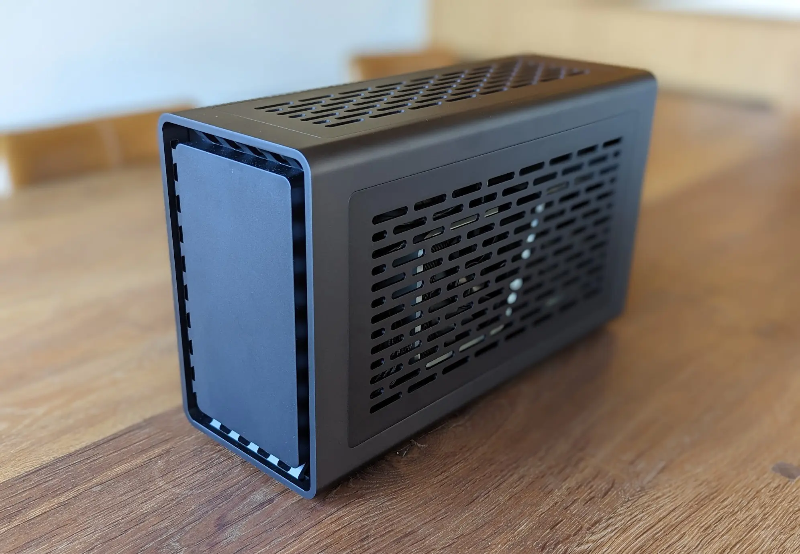 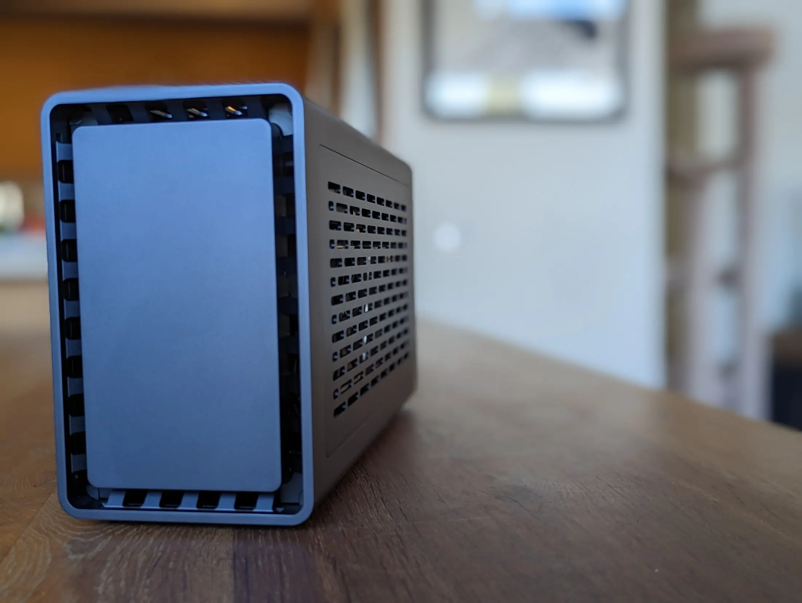List of components:
As it would later turn out, a Noctua NF-A14 does not fit in a Mjolnir. Luckily, the thermal benchmarks showed this build does not need an extra fan. If you insist on adding one (for a core i9 maybe?), a Noctua NF-A12x15 will do.
The chassis comes pre-assembled. All you have to do is slide out the core skeleton. Mounting each component is easy because no panels are in the way. Once done, the core slides back into the chassis.
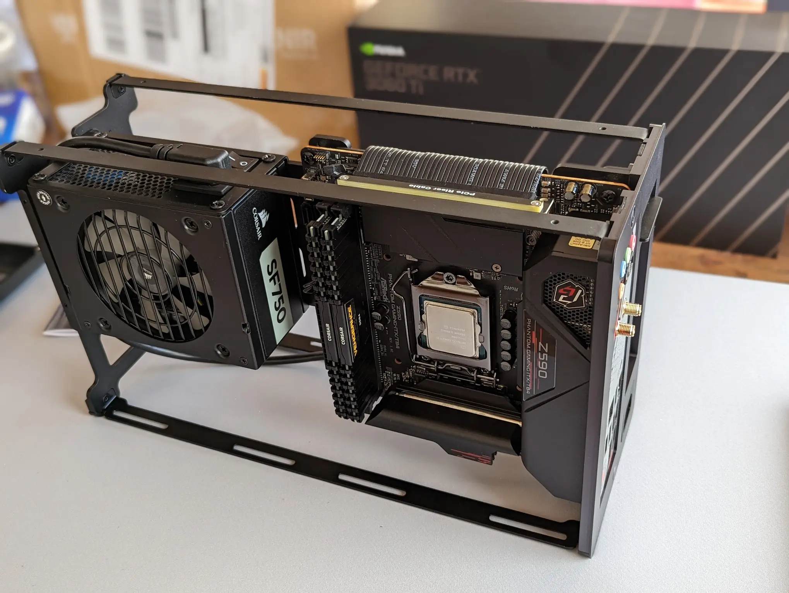Motherboard and PST mounted. Next is the GPU on the other side thanks to a provided Riser 4.0 cable.
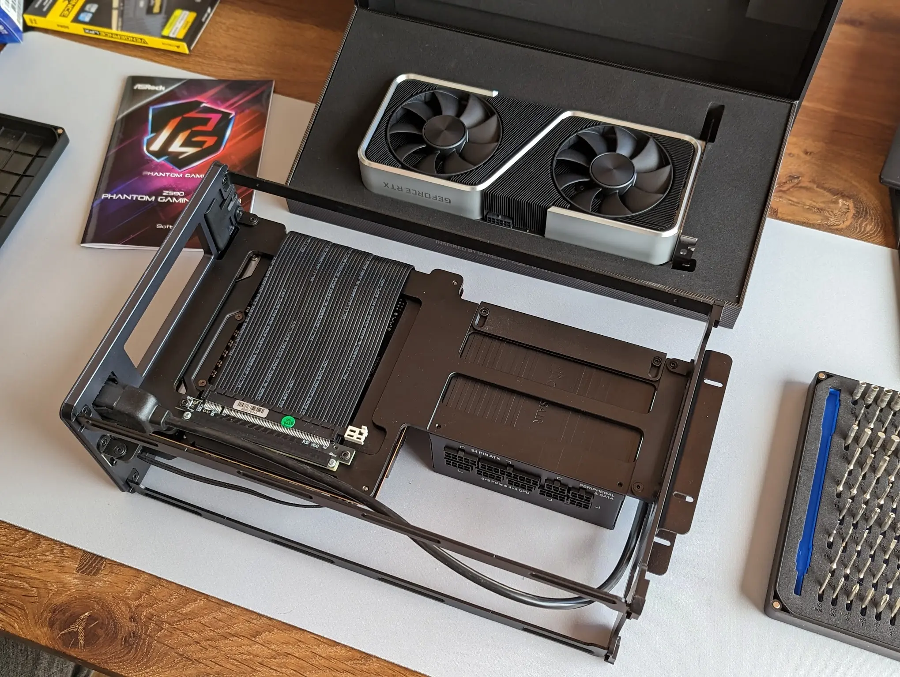 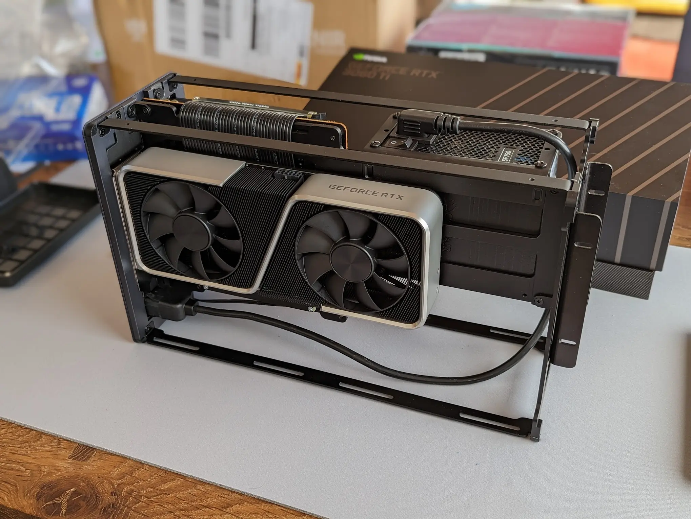I am not going to lie, it is a tight fit on the CPU side once one adds the AIO CPU cooler, especially when it comes to routing the pipes. For this last step, previous SFF experience along with Optimum Tech's review[1], and Thor Zone's guide[2] were very helpful.
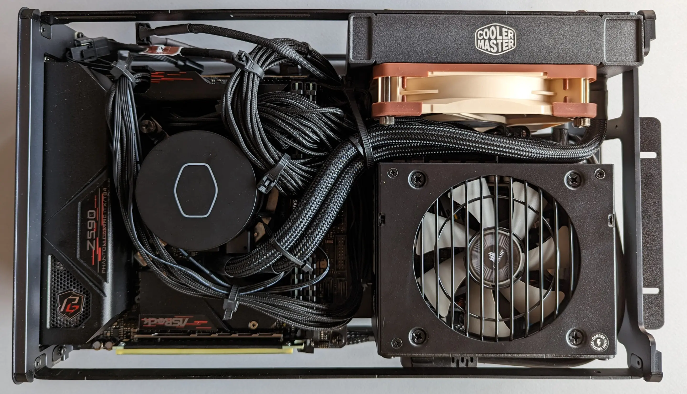Notice the AIO fan looks different because I replaced the one that came with the CoolMaster with a Noctua NF-A12x25.
I am impressed a PC case this small exists. Mjolnir makes a Streacom DA2, an especially tiny chassis itself, look big when placed side by side.
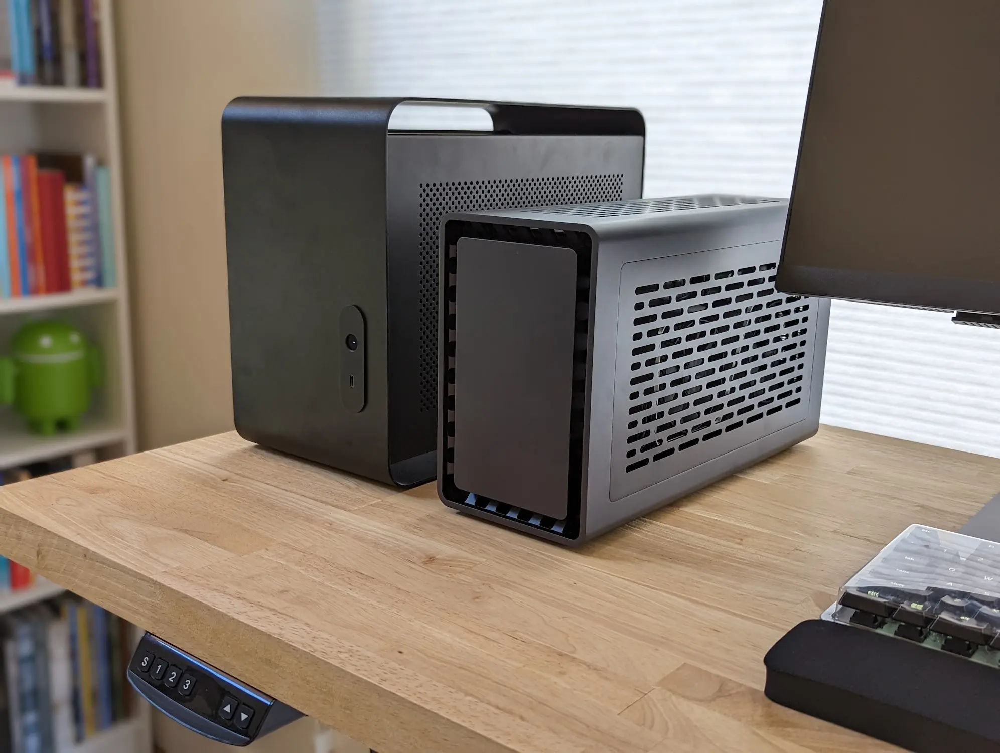I was also pretty happy with the thermals. In my configuration, the CPU hot air is exhausted vertically through the top panel and the GPU exhausts towards the back. I used Geeks3D Furmark to generate load and monitor thermal metrics via HWiNFO.exe. The CPU remained in the vicinity of 46C. No worries there.
In terms of noise, it is impossible to beat a passive DB4 but the CoolerMaster set to run at 30% up to 50C made the AIO barely audible most of the time.
And with that, we are back in business!
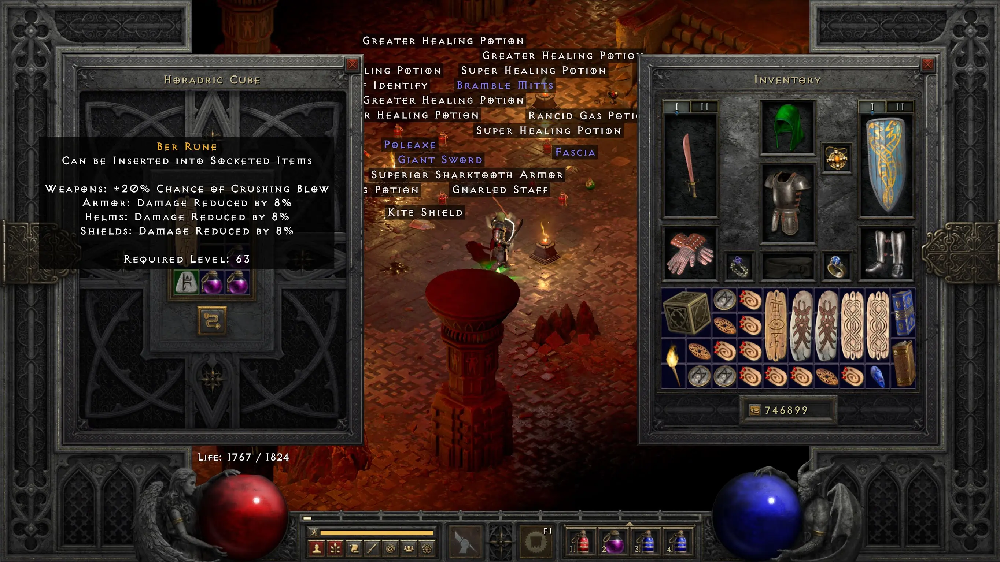 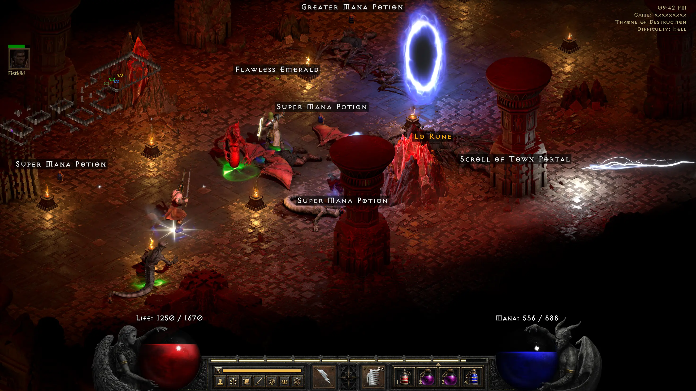 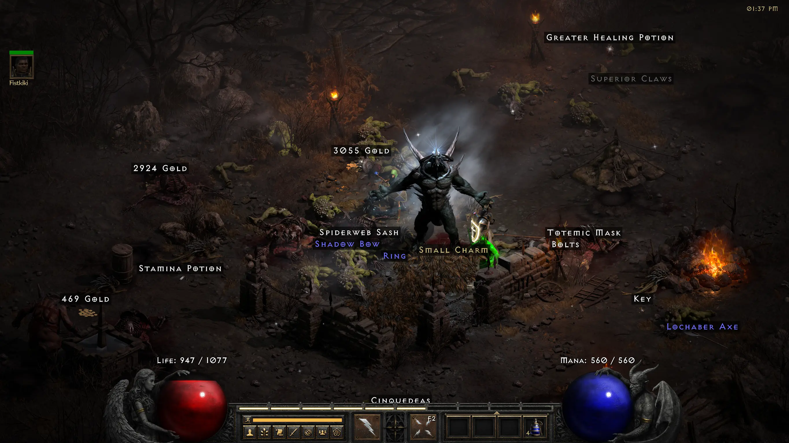 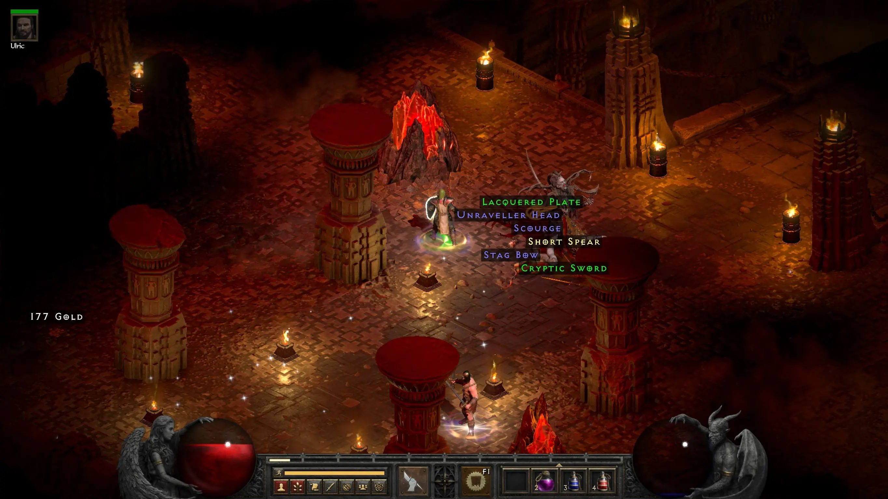 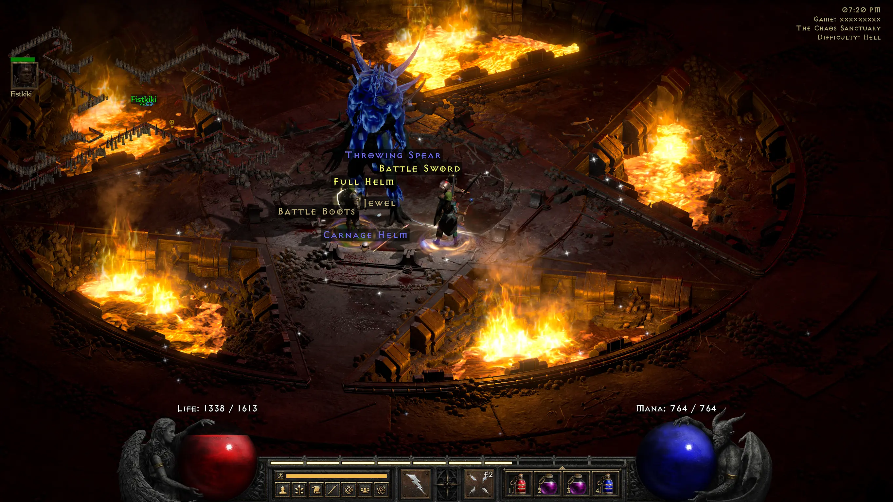 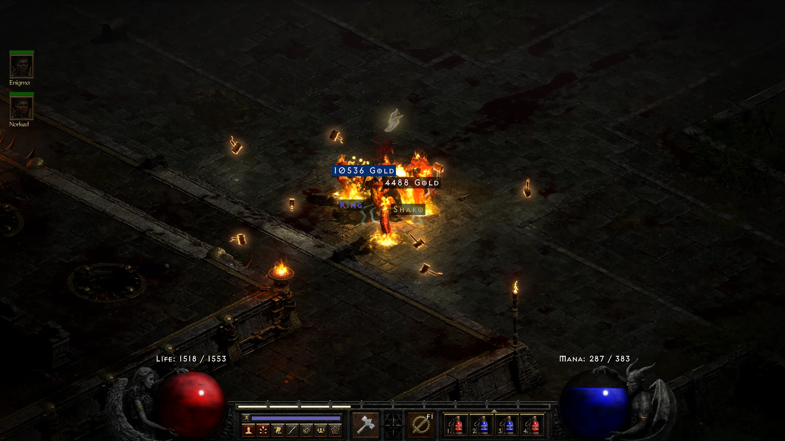Until Diablo 4 comes out[3]!
| ^ | [1] | Optimum Tech - Thorzone Mjolnir Prototype Review! Huge Power, 10L Case |
| ^ | [2] | MJOLNIR — The Complete Air Cooling Guide (Beginner Users) |
| ^ | [3] | Maybe by then we will have dropped a Harlequin Crest! This one keeps eluding us. We have lost count of the many rare shako we got. |